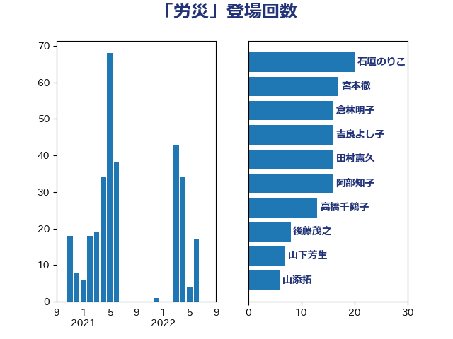

単語「労災」

| 石垣のりこ | 立憲民主党 | 20 回 |
| 宮本徹 | 日本共産党 | 17 回 |
| 倉林明子 | 日本共産党 | 16 回 |
| 吉良よし子 | 日本共産党 | 16 回 |
| 田村憲久 | 自由民主党 | 16 回 |
| 阿部知子 | 立憲民主党 | 16 回 |
| 高橋千鶴子 | 日本共産党 | 13 回 |
| 後藤茂之 | 自由民主党 | 8 回 |
| 山下芳生 | 日本共産党 | 7 回 |
| 山添拓 | 日本共産党 | 6 回 |
| 福島みずほ | 社会民主党 | 6 回 |
| 岸真紀子 | 立憲民主党 | 5 回 |
| 西村智奈美 | 立憲民主党 | 5 回 |
| 古賀之士 | 立憲民主党 | 4 回 |
| 田畑裕明 | 自由民主党 | 4 回 |
| 本村伸子 | 日本共産党 | 3 回 |
| 橋本岳 | 自由民主党 | 3 回 |
| 伊藤岳 | 日本共産党 | 2 回 |
| 古川元久 | 国民民主党 | 2 回 |
| 大島敦 | 立憲民主党 | 2 回 |
| 小泉進次郎 | 自由民主党 | 2 回 |
| 斉藤鉄夫 | 公明党 | 2 回 |
| 白石洋一 | 立憲民主党 | 2 回 |
| 石橋通宏 | 立憲民主党 | 2 回 |
| 笠井亮 | 日本共産党 | 2 回 |
| 三原じゅん子 | 自由民主党 | 1 回 |
| 勝部賢志 | 立憲民主党 | 1 回 |
| 吉田統彦 | 立憲民主党 | 1 回 |
| 和田義明 | 自由民主党 | 1 回 |
| 塩田博昭 | 公明党 | 1 回 |
| 大塚耕平 | 国民民主党 | 1 回 |
| 山本博司 | 公明党 | 1 回 |
| 山本香苗 | 公明党 | 1 回 |
| 川合孝典 | 国民民主党 | 1 回 |
| 泉健太 | 立憲民主党 | 1 回 |
| 渡辺孝一 | 自由民主党 | 1 回 |
| 田島麻衣子 | 立憲民主党 | 1 回 |
| 田村貴昭 | 日本共産党 | 1 回 |
| 稲津久 | 公明党 | 1 回 |
| 竹谷とし子 | 公明党 | 1 回 |
| 菅義偉 | 自由民主党 | 1 回 |
| 落合貴之 | 立憲民主党 | 1 回 |
| 野上浩太郎 | 自由民主党 | 1 回 |
| 野間健 | 立憲民主党 | 1 回 |